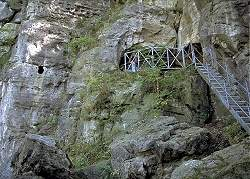

| In English |
| In English |
Lippoldshöhle
Touristische Informationen:
|  |
| Bild: Haupteingang mit Zugangstreppe. |
{kind=link}
| Ort: | A7 Ausf Hildesheim, B1km bis, B Skm bis kurz vor Alfeld, in Godenau rechts ab nach Brunkensen, am Ortsausgang. |
| Öffnungszeiten: | frei zugänglich |
| Eintrittspreise: | kostelos |
| Typ: | Klufthöhle, z.T. küstlich, Dolomit |
| Licht: | keine, Taschenlampe mitbringen |
| Dimension: | L=30m, GR: L=3m, B=3m, H=2m. |
| Führungen: | |
| Fotografieren: | |
| Zugänglichkeit: | |
| Literatur: | |
| Adresse: | |
| Nach unserem Wissen sind die Angaben für das in eckigen Klammern angegebene Jahr korrekt. Allerdings können sich Öffnungszeiten und Preise schnell ändern, ohne daß wir benachrichtigt werden. Bitte prüfen Sie bei Bedarf die aktuellen Werte beim Betreiber, zum Beispiel auf der offiziellen Website in der Linkliste. | |
| Stand: | $Date: 2015/11/20 13:24:04 $ |
History
Bemerkungen:
Die Lippoldshöhle ist eine kleine Spaltenhöhle, die im Mittelalter vom Räuber Lippold als Unterschlupf benutzt wurde. Sie liegt am Glenepaß, der den Duinger Berg und den Reuberg trennt. Direkt unterhalb fließt das kleine Flüsschen Glene, das später in die Leine mündet.
 |
| Bild: Nebeneingang. |
Nach der Sage entführte der Räuber Lippold die Tochter des Bürgermeisters von Alfeld aus ihrer eigenen Hochzeitsgesellschaft in seine Höhlenburg. Um seine Verfolger irrezuführen ließ er die Hufeisen auf seinen Pferden verkehrt herum aufschlagen. Wenn er so ausritt, sah es so aus als wäre er noch in seiner Höhle.
Eines Tages wurde er aber krank und schickte sein Weib nach Alfeld in die Apotheke, nachdem sie geschworen hatte sich keinem Menschen zu erkennen zu geben. In Alfeld auf dem Marktplatz wurde sie vom Heimweh überwältigt und weinte bitterlich. Ihr Vater, der Bürgermeister, erkannte sie nicht und fragte deshalb ahnungslos, warum sie weine. Da sie nicht antwortete, nahm er sie mit in die Ratstube und riet ihr, dem Kamin ihr Herz auszuschütten, wenn sie mit keinem Menschen darüber dürfe. Da er aber heimlich lauschte, erfuhr er die ganze Geschichte. Er folgte ihr mit der Bürgerwehr, überwältigte und erhängte den Räuber und rettete sie.
Sage
Ob der Räuber Lippold wirklich existierte ist nicht sicher, noch weniger ob die Angaben in der Sage so stimmen. Doch die kleine Höhle weist sehr starke Bearbeitungsspuren auf, die eine (wenigstens zweitweise) Nutzung als Unterkunft wahrscheinlich erscheinen lassen. Es ist wahrscheinlich, dass diese Unterkunft über Jahrhunderte hinweg immer wieder benutzt wurde, vor allem zu Notzeiten, oder wenn aus irgendeinem Grund Wohnraum kanpp war.
- Siehe auch
 Daneilshöhle im Huy
Daneilshöhle im Huy Auf Google nach "Lippoldshöhle" suchen...
Auf Google nach "Lippoldshöhle" suchen... Google Earth Placemark
Google Earth Placemark- Lippoldshöhle - Wikipedia (visited: 03-OCT-2014)
 Räuber Lippoldshöhle in Brunkensen
(visited: 03-OCT-2014)
Räuber Lippoldshöhle in Brunkensen
(visited: 03-OCT-2014)- Lippoldshöhle bei Alfeld Brunkensen Lügenstein
(visited: 03-OCT-2014)
- Lippoldshöhle
(visited: 03-OCT-2014)